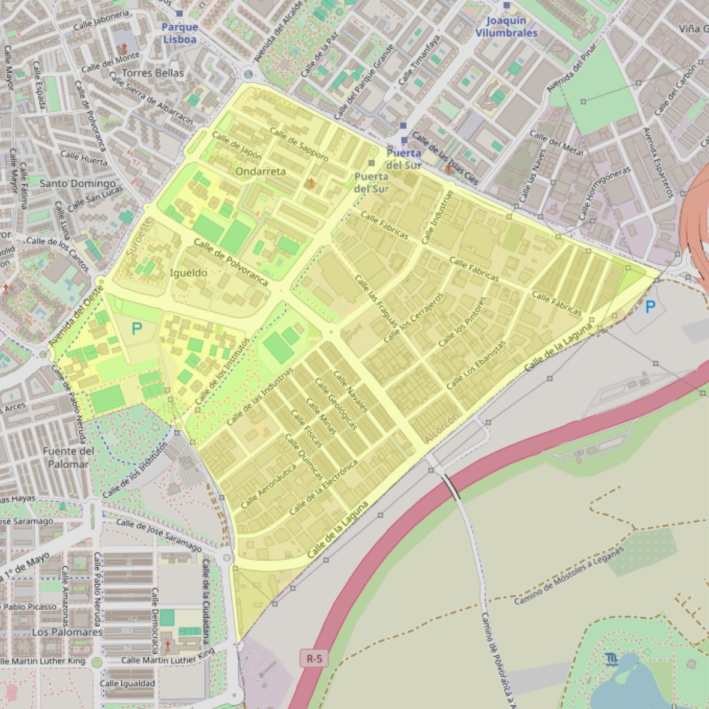

Santa Sofía

- Arciprestazgo
- Alcorcón
- Población
- Alcorcón
- Dirección postal
- c/ Munich, s/n
- Código postal
- 28923
- Extensión
- 1,88 km² (188 ha)
- Teléfono
- 916 428 446
- Correo electrónico
- santasofia-alcorcon@diocesisgetafe.es
Arciprestazgos y parroquias de la Diócesis de Getafe
